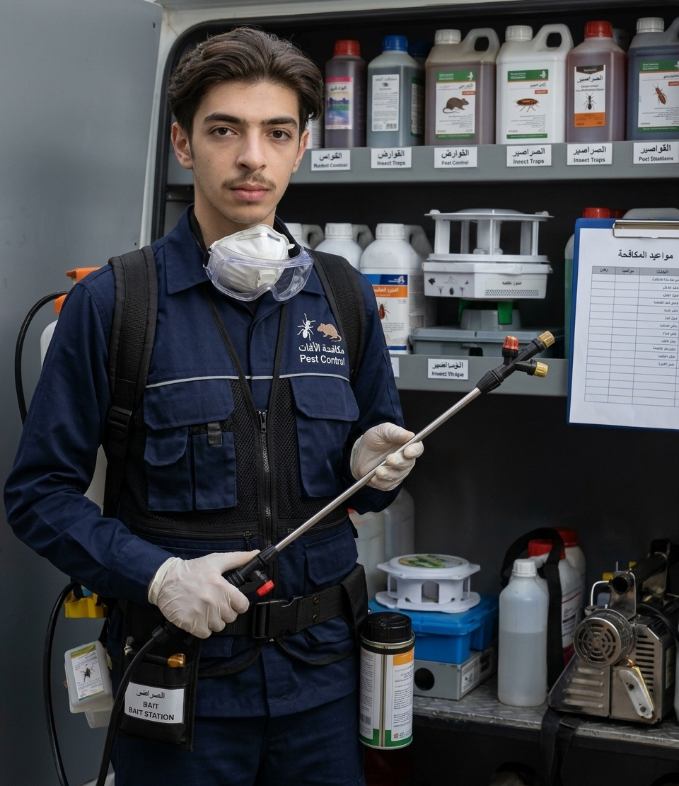

مكافحة القوارض
التعامل مع آثار ومصادر وجود الفئران والقوارض في المكان.
حلول لمكافحة الآفات
معلومات وخدمات في مكافحة القوارض والحشرات، مع الاهتمام بطبيعة المكان واتباع إرشادات السلامة المناسبة.

مجالات العمل
تختلف طريقة التعامل بحسب نوع الآفة ومكان ظهورها. تعرّف على المجالات الأساسية.
التعامل مع آثار ومصادر وجود الفئران والقوارض في المكان.
الحد من انتشار الحشرات الزاحفة ومتابعة أماكن ظهورها.
التعامل مع الحشرات الطائرة ومصادر تجمعها بحسب الموقع.
خطوات بسيطة
إجراءات يومية تساعد على تقليل عوامل جذب الآفات، وتكمّل أعمال المكافحة عند الحاجة.
احفظ الأطعمة في أوعية محكمة، وتخلّص من بقايا الطعام بانتظام.
أغلق الفتحات والشقوق التي قد تسمح بدخول القوارض أو الحشرات.
حافظ على جفاف الأماكن الرطبة، وأزل المياه الراكدة قدر الإمكان.
معلومات الفني
مكافحة القوارض والحشرات